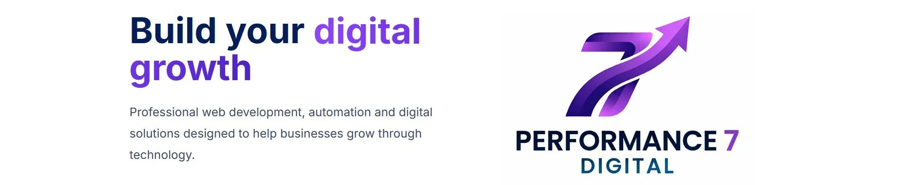
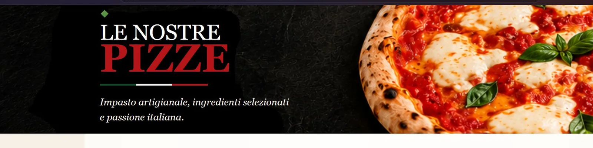
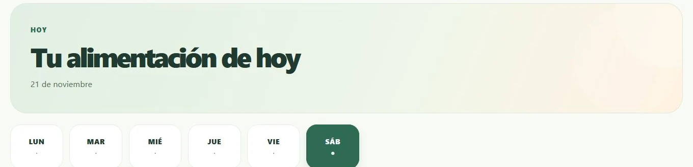
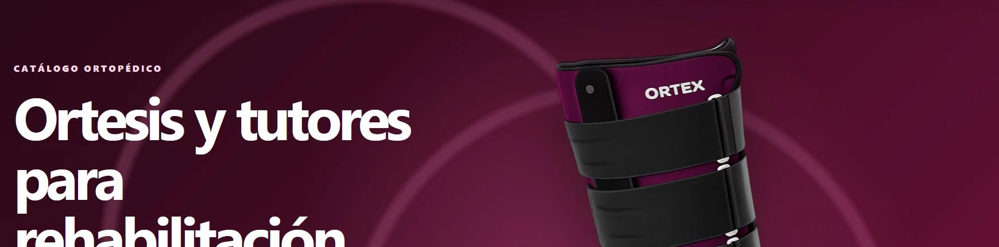
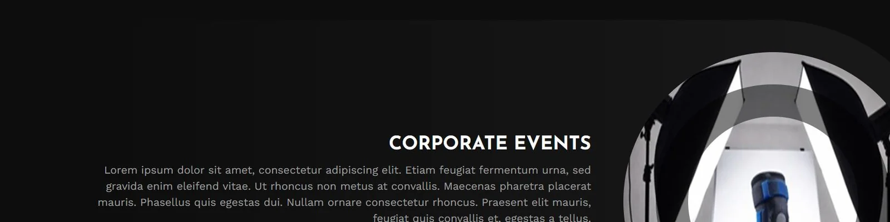
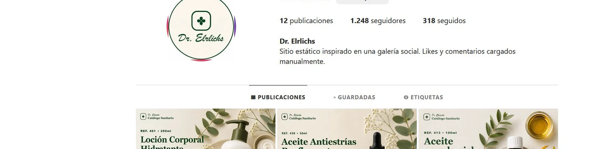
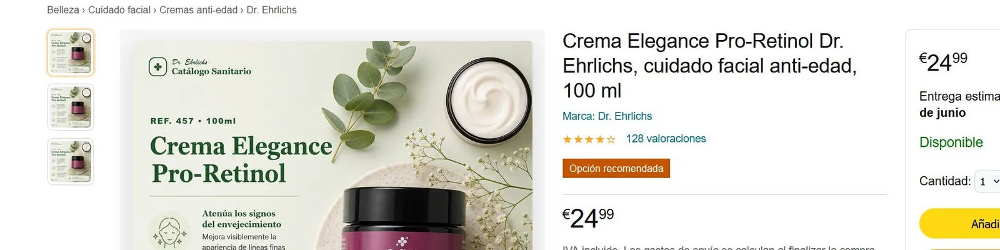
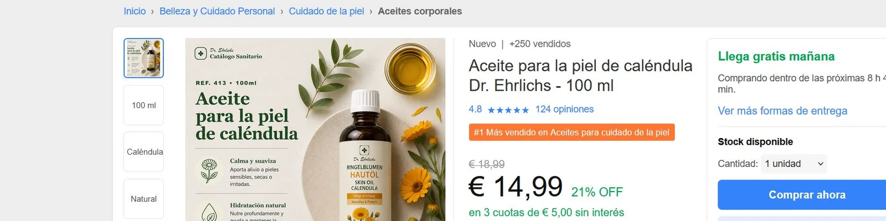

Sitio principal de Performance 7 Digital. Presenta su identidad y su propuesta de desarrollo web, automatización y soluciones digitales.
PERFORMANCE 7 DIGITAL / PORTAFOLIO
Una selección de sitios y experiencias digitales. Explorá cada proyecto a través de su enlace y una vista previa.

Sitio principal de Performance 7 Digital. Presenta su identidad y su propuesta de desarrollo web, automatización y soluciones digitales.

Presentación de un servicio de menú digital para gastronomía, con acceso mediante código QR y una experiencia pensada para dispositivos móviles.

Menú digital de pizzería italiana, con fotografías de pizzas, ingredientes y precios en una presentación inspirada en la tradición gastronómica italiana.

Interfaz de planificación alimentaria con vistas por día, comidas y preparaciones, además de una opción de idioma.

Catálogo digital de productos ortopédicos, enfocado en ortesis y tutores para rehabilitación, soporte e inmovilización.
Catálogo digital de productos orientados al cuidado personal, el bienestar y la cosmética natural.
Muestra visual de publicaciones sobre cosmética femenina, tratamientos faciales y cuidado de la piel, organizadas en una cuadrícula inspirada en redes sociales.

Sitio de presentación para servicios de ortopedia, con diseño oscuro, detalles en fucsia y una imagen destacada de un producto ortopédico.

Galería visual de productos de cuidado personal y cosmética, presentada con una interfaz inspirada en un perfil de Instagram.

Demostración de una página de producto con diseño inspirado en Amazon: galería de imágenes, información del artículo, precio y controles de compra.

Demostración de una ficha de producto con diseño inspirado en un marketplace, que presenta imágenes, características, precio y opciones de compra.